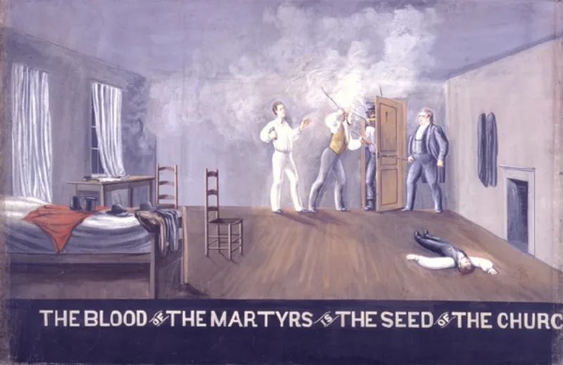

Temple oath: avenge the prophets' blood upon this nation
UnrefutedNo good counter-argument has been published by LDS scholars.
What it was
From about 1845 until about 1927, the temple endowment included a covenant. It bound the member to "pray and never cease to pray Almighty God to avenge the blood of the prophets upon this nation," and to teach the same to children and grandchildren, to the third and fourth generation.
How we know the wording
It was documented under oath. The Reed Smoot hearings in the United States Senate, from 1904 to 1906, put it on the record.
No informed apologist denies that it existed.
How it ended
It was quietly removed around 1927, during the church's assimilation era. There was no public explanation and no repudiation.
Their answer, at full strength
FAIR points out that the oath asked God to avenge. It did not commit anyone to take vengeance themselves.
That is close to the martyrs' cry in Revelation 6:10 — "How long, O Lord… dost thou not judge and avenge our blood?" — and to the imprecatory Psalms. It arose in the raw aftermath of the murders of Joseph and Hyrum Smith, for which nobody was ever convicted.
It was removed as the wound healed. And temple ceremonies have always been revised.
How strong is this argument?
Strong for you, and the Revelation 6:10 point is fair — take the caricature off the table first. What stands is the documented thing.
A prayer for vengeance on a nation, to be handed down for four generations, inside the faith's holiest ordinance. Set that beside Matthew 5:44, where Jesus tells us to pray for our enemies.
What to say
"Jesus says pray for those who persecute you. How does that sit with the old covenant?"


How they answer this — at its strongest
The oath asked God to avenge, as the martyrs do at Revelation 6:10.
FAIR emphasises that the oath asked God to avenge. It did not commit members to take vengeance themselves.
That runs closely parallel to the martyrs' cry at Revelation 6:10, 'How long, O Lord… dost thou not judge and avenge our blood?', and to the imprecatory Psalms.
It arose in the raw aftermath of the state-tolerated murders of Joseph and Hyrum Smith, for which nobody was ever convicted. It was removed as the wounds healed.
And temple ceremonies have always been revised. Its removal reflects the living, adaptive nature of the ordinances.
The verdict
Strong for you, but grant Revelation 6:10 first, then read Matthew 5:44.
Nobody informed denies that the oath existed. Its wording was given under oath in the Senate, at the Reed Smoot hearings of 1904 to 1906. David John Buerger set out the scholarship in Dialogue. It ran from about 1845 to about 1927, and was then quietly dropped.
The Revelation 6:10 parallel is a fair answer to the caricature that this was an oath to do violence. Take that off the table first.
What stands is the documented thing. A prayer for vengeance on the United States, taught to children to the third and fourth generation, inside the faith's holiest rite. Set that beside Matthew 5:44.
Sources
- Reed Smoot hearing testimony on the Oath of Vengeance (1906 record)
- David John Buerger, 'The Development of the Mormon Temple Endowment Ceremony' (Dialogue)
- FAIR: Endowment/Oath of vengeance